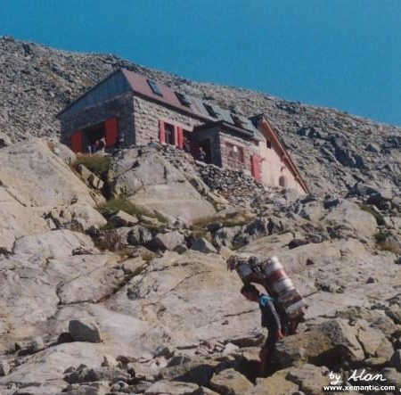

|
Schronisko jest maleńkie, zbudowane z kamieni. Na parterze znajduje się
bufet i sala jadalna, służąca nocą za wspólną sypialnię osobom
zakwaterowanym w schronisku, którymi są najczęściej turyści wysokogórscy
i taternicy. Nie istnieje tu żaden dojazd ani kolejka linowa, zatem
schronisko zaopatrywane jest przez nosičów (tragarzy), wnoszących na plecach
wszelkie zaopatrzenie dla schroniska, od papieru toaletowego po
sześćdziesięciolitrowe puszki piwa i gazu. Mimo to ceny nie są wygórowane,
bo do tego schroniska trafia z reguły tylko pewien określony typ turystów.
Menu jest dość skromne. Warto nie przeoczyć czekolady na gorąco z bitą śmietaną.
Specyficzna, ciepła atmosfera schroniska jest zasługą pracującej w nim załogi,
tworzonej przez ludzi gór, dla których praca w schronisku nie jest po prostu pracą,
ale pewną filozofią życia. Obszar schroniska nazwany został "Wolnym Królestwem Rysy"
- miejscem, gdzie ustają wszelkie podziały i panuje przyjaźń między ludźmi wszystkich
narodów, zjednoczonych w miłości do gór. Można tu przeczytać żartobliwe napisy w stylu
"Politykować i pluć na ziemię w tym pomieszczeniu jest zabronione". Inne żarty związane
są z postacią Lenina, która to postać w czasie komunizmu w tym właśnie miejscu
otaczana była szczególnym kultem, ponieważ Ojciec Rewolucji, nim wyzwolił
klasę robotniczą, zdobył szczyt Rysów. Figurkę Wodza można pocałować za jedyne
10 koron, a na zewnątrz znajdują się odbite na czerwono w kamieniach jego "ślady"
(stóp, rąk, a nawet części ciała na której usiadł by odpocząć).
Ci, którzy chcieliby spróbować losu nosicza, mogą wnieść do schroniska
dziesięciokilogramowy ładunek, który można pobrać ze specjalnej budki przy
początku szlaku wychodzącego od schroniska przy Popradzkim Stawie. Niestety
nie zawsze jest tam dość ładunku dla wszystkich chętnych. Symboliczną nagrodą za wniesienie
jest "Certyfikat nosicza" i herbata z sokiem malinowym. Dla szczególnie silnych
zdarzają się czasem ładunki trzydziestokilowe - za ich wniesienie otrzymuje się
herbatę z rumem.
 Humorystyczne opowiadania i rysunki z życia ludzi z Chaty można przeczytać
(po słowacku) i obejrzeć w książeczce którą napisali i narysowali Jaro Švorc
i Paĺo Barabáš: "Spod krošne veselo i vážne" ("Spod nosiłek na wesoło i
na poważnie"). Słowo krošna to po słowacku nosiłki, drewniany sprzęt
do noszenia, zakładany na plecy. Książeczka w cenie 20 Sk jest do nabycia w schronisku.
Humorystyczne opowiadania i rysunki z życia ludzi z Chaty można przeczytać
(po słowacku) i obejrzeć w książeczce którą napisali i narysowali Jaro Švorc
i Paĺo Barabáš: "Spod krošne veselo i vážne" ("Spod nosiłek na wesoło i
na poważnie"). Słowo krošna to po słowacku nosiłki, drewniany sprzęt
do noszenia, zakładany na plecy. Książeczka w cenie 20 Sk jest do nabycia w schronisku.
Warto też, choćby i natura nie wzywała, odwiedzić schroniskową toaletę, położoną
opodal na krawędzi przepaści - korzystanie z niej, szczególnie dla panów, mogących
z racji ukierunkowania na wprost spoglądać w otchłań, jest silnym przeżyciem.
|
|
Mimo że próby wybudowania schroniska podejmowały organizacje turystyczne
już przed pierwszą wojną światową, udało się to dopiero w 1930 roku. Łączył się z
tym wybuch wielkiiego entuzjazmu w środowisku, bezinteresowne zaangażowanie
wielu osób i instytucji. Otwarcie nastąpiło 16 lipca 1933 r. Pierwszym chatarem
był Alojz Krupitzer - taternik, narciarz, przewodnik górski; później dzierżawcą
został Otakar Štáfl, twórca symbolicznego Cmentarza Ofiar Tatr. Piętro dobudowano
w czasie generalnego remontu w 1978 roku, głownie za wsparciem działaczy władz partyjnych,
którzy mieli sentyment do tego miejsca, jako że pamiętali je z czasów swej młodości,
z akcji ku czci Lenina.
Inne remonty wiązały się z demolowaniem schroniska przez lawiny, które niszczyły je zimą
kilkanaście razy, ostanio w 1999 i 2001 roku.
W czasie wojny ukrywali się tu uciekinierzy i kurierzy z Polski, m.in. taternicy
Wawrzyniec Żuławski i Stanisław Siedlecki. Goślili tutaj też liczni najsłynniejsi taternicy
i narciarze, m.in. Arno Puškáš. Od 1978 roku gospodarzem schroniska jest niegdysiejszy
nosicz Viktor Beránek.

Ostatni postój tuż przed schroniskiem.
|


{kind=link}
{kind=link}
{kind=link}
{kind=link}